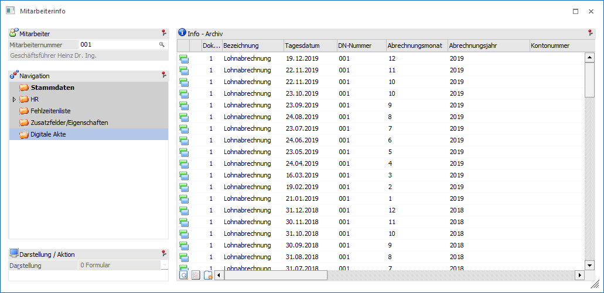
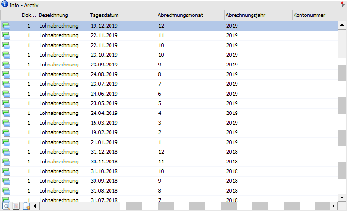

In diesem Bereich werden alle Archiveinträge, welche für den Mitarbeiter erfasst (beschlagwortet) wurden, angezeigt. Hierbei werden die Schlagwörter "086 - Arbeitnehmer" und "091 - DN-Nummer" berücksichtigt.
Hinweis
In dieser Archivanzeige werden nur die Einträge des aktuellen Mandanten angezeigt. Wenn die Einträge von allen Mandanten angezeigt werden sollen, so muss dieses über die Archivsuche ausgewertet werden.

Die Archiv-Anzeige besteht aus den folgenden Info-Elementen:
ü Info - Archiv
Info - Archiv

In der Tabelle werden alle Archiveinträge des Mitarbeiters aufgeführt. Die Anzeige eines Archivdokuments kann über 2 Wege erfolgt:
ü In WinLine
Mit Hilfe des
Buttons "Vorschau" kann die sogenannten "Dokumenten-Vorschau" aktiviert bzw.
deaktiviert werden kann. In dieser Vorschau werden WinLine-Dokumente und eine
Vielzahl von externen Dokumente dargestellt.
ü Extern
Per Doppelklick oder den
Tabellenbutton "Archiveintrag anzeigen" wird das Archivdokument mit jenem
Programm dargestellt, welches gemäß Windows-Einstellung hierfür zuständig
ist.
Tabellenbuttons
Ø Archiveintrag suchen
Über den Button "Archiveintrag suchen" gelangt man in das Fenster "Archiveintrag suchen". Hier können alternativer Suchvorgänge durchgeführt werden, wobei als erster Suchbegriff die Mitarbeiternummer vorgegeben wird.
Ø Archiveintrag anzeigen
Durch Anklicken des Buttons "Archiveintrag anzeigen" wird der markierte Eintrag angezeigt (mit dem Programm, welches in der Windows-Einstellung mit dem jeweiligen Element verknüpft wurde).
Ø neuer Archiveintrag
Bei Anwahl dieses Buttons wird der Programmpunkt "Neuer Archiveintrag" geöffnet, mit dessen Hilfe neue Archiveintrag erstellt werden können.
Ø Ausgabe Excel
Durch Anwahl des Buttons "Ausgabe Excel" wird der Inhalt der Tabelle an Microsoft Excel übergeben.
Ø Tabelleneinstellungen speichern
Die Spalten einer Tabelle können grundsätzlich an beliebige Positionen verschoben, bzw. in der Breite entsprechend angepasst werden. Durch Anwahl des Buttons "Tabelleneinstellungen speichern" werden die Einstellungen benutzerspezifisch gespeichert und bei dem nächsten Aufruf des Programmpunktes wieder vorgeschlagen.
Ø Gesamteinstellungen speichern
Im Gegensatz zu "Tabelleneinstellungen speichern" können mit "Gesamteinstellungen speichern" mehrere Tabellenaufbauten gespeichert und nach Wunsch geladen werden. Zusätzlich werden Sonderfunktionen der Tabelle (z.B. "Spalte gruppieren") ebenfalls bei der Speicherung bedacht.